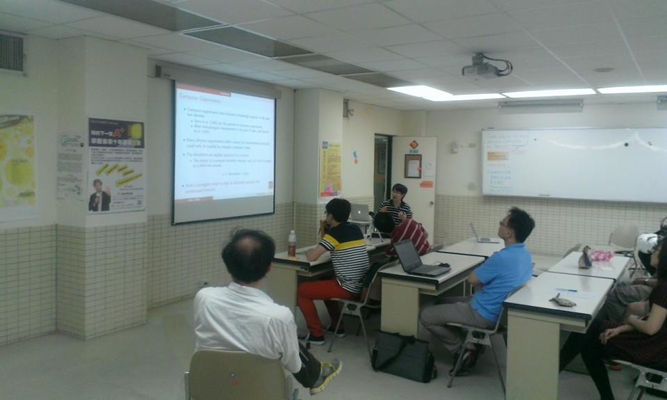
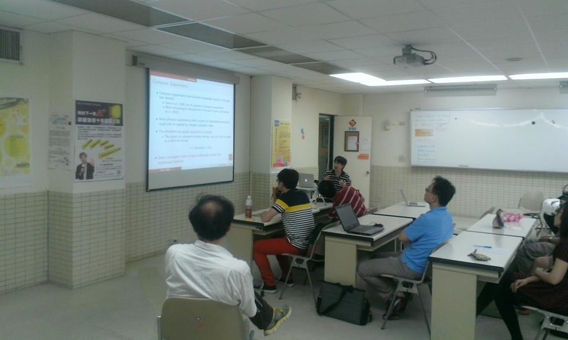
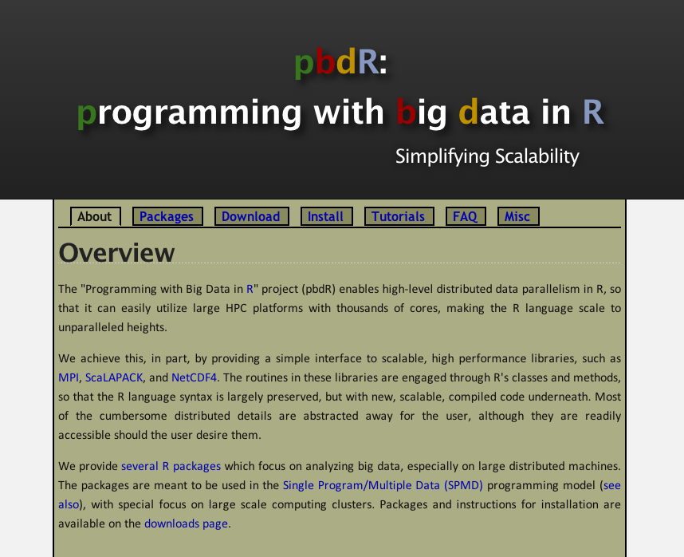
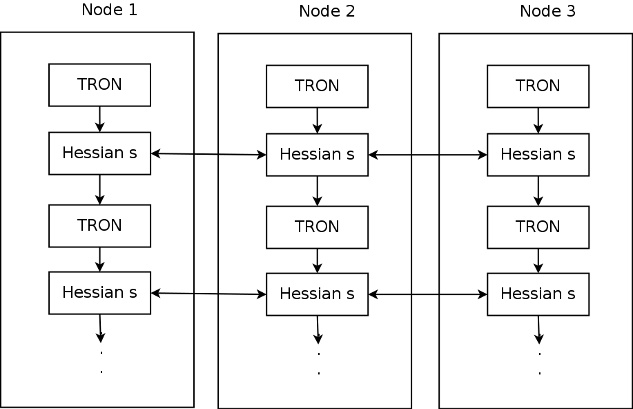
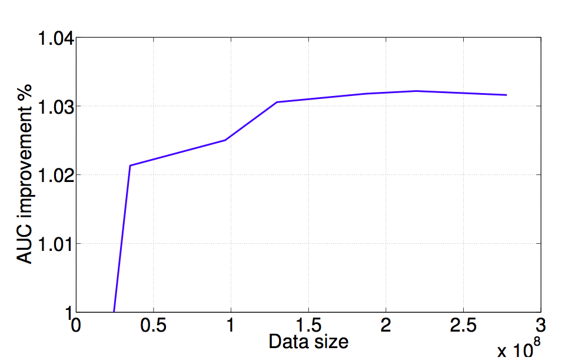
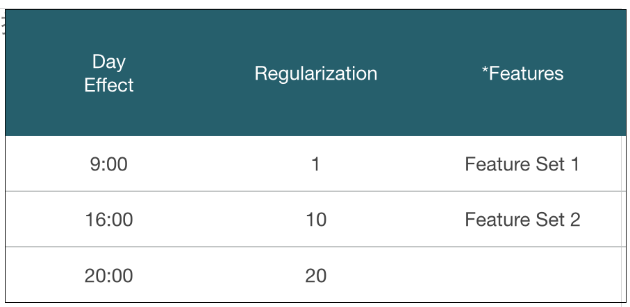
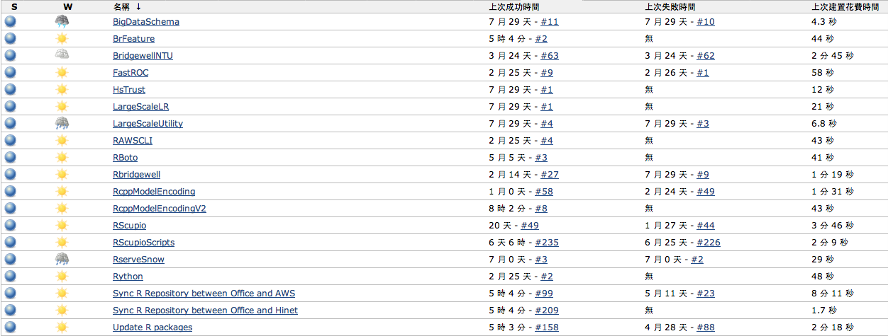
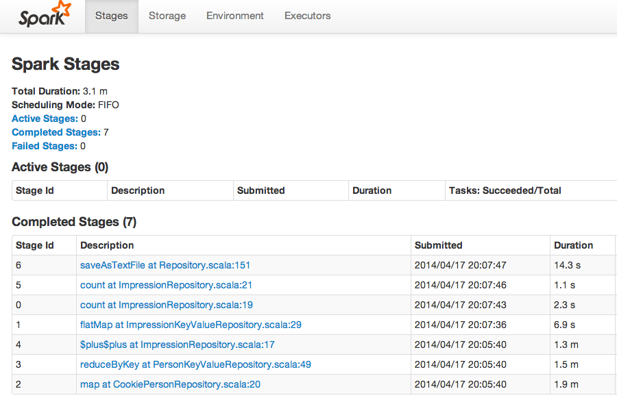

Taiwan R User Group
MLDMMonday: 每週一分享資料相關議題
主題包含但不限於：
R 套件使用
機器學習和統計模型
Wush Wu
Taiwan R User Group

Taiwan R User Group
MLDMMonday: 每週一分享資料相關議題
主題包含但不限於：
R 套件使用
機器學習和統計模型
很多人都在詬病R 無法處理大量的數據
但是只要用對R 的包
R 是可以處理大量的數據
今天我想跟大家分享
運用R 建立商用推薦引擎的心得
主要是靠著Rcpp和pbdMPI等包
打造可扩放性的學習模組
實際的數據和課本上的數據是不一樣的
今天從這樣的數據開始
| is_click | show_time | client_ip | adid | |
|---|---|---|---|---|
| 1 | FALSE | 2014/05/17 04:06:52 | 114.44.x.x | 133594 |
| 2 | FALSE | 2014/05/17 04:04:48 | 1.162.x.x | 134811 |
| 3 | FALSE | 2014/05/17 04:03:05 | 101.13.x.x | 131990 |
| 4 | FALSE | 2014/05/17 04:05:04 | 24.84.x.x | 134689 |
| 5 | FALSE | 2014/05/17 04:03:26 | 140.109.x.x | 126437 |
| 6 | FALSE | 2014/05/17 04:04:28 | 61.231.x.x | 131389 |
以「預測點擊發生的機率」為例
| is_click | show_time | client_ip | adid | |
|---|---|---|---|---|
| 1 | FALSE | 2014/05/17 04:06:52 | 114.44.x.x | 133594 |
| 2 | FALSE | 2014/05/17 04:04:48 | 1.162.x.x | 134811 |
| 3 | FALSE | 2014/05/17 04:03:05 | 101.13.x.x | 131990 |
| 4 | FALSE | 2014/05/17 04:05:04 | 24.84.x.x | 134689 |
| 5 | FALSE | 2014/05/17 04:03:26 | 140.109.x.x | 126437 |
| 6 | FALSE | 2014/05/17 04:04:28 | 61.231.x.x | 131389 |
\[w^Tx\]
iris
head(model.matrix(Species ~ ., iris))
(Intercept) Sepal.Length Sepal.Width Petal.Length Petal.Width
1 1 5.1 3.5 1.4 0.2
2 1 4.9 3.0 1.4 0.2
3 1 4.7 3.2 1.3 0.2
4 1 4.6 3.1 1.5 0.2
5 1 5.0 3.6 1.4 0.2
6 1 5.4 3.9 1.7 0.4
實際的資料
有 \(10^{9+}\) 筆資料
有 \(10^{3+}\) 筆廣告
每種類別變數可能到 \(10^{3}\) 類別
model.matrix的後果：
至少需要 \(10^9 \times (10^3...)\) 個位元
也就是 \(116.415\) GB的記憶體
開始抱怨了!
請使用和其他工具一樣的資料結構:
這種狀況，應該使用稀疏矩阵
n <- 1
m1 <- matrix(0, 10^n, 10^n);m1[1, 4] <- 1
c(m1)
library(Matrix)
m2 <- Matrix(0, 10^n, 10^n, sparse=TRUE)
m2[1,4] <- 1
str(m2)
[1] 0 0 0 0 0 0 0 0 0 0 0 0 0 0 0 0 0 0 0 0 0 0 0 0 0 0 0 0 0 0 1 0 0 0 0 0 0 0 0 0 0 0 0 0 0 0 0
[48] 0 0 0 0 0 0 0 0 0 0 0 0 0 0 0 0 0 0 0 0 0 0 0 0 0 0 0 0 0 0 0 0 0 0 0 0 0 0 0 0 0 0 0 0 0 0 0
[95] 0 0 0 0 0 0
Formal class 'dgCMatrix' [package "Matrix"] with 6 slots
..@ i : int 0
..@ p : int [1:11] 0 0 0 0 1 1 1 1 1 1 ...
..@ Dim : int [1:2] 10 10
..@ Dimnames:List of 2
.. ..$ : NULL
.. ..$ : NULL
..@ x : num 1
..@ factors : list()
在我手上的資料上
大概可以省下 \(10^2 \sim 10^3\) 倍記憶體
而且可以大幅度加快運算效能!
如果m1, m2是 \(10^4 \times 10^4\) 的矩陣:
test replications elapsed relative user.self sys.self user.child sys.child
1 m1 %*% r 100 21.690 868 47.727 0.217 0 0
2 m2 %*% r 100 0.025 1 0.021 0.003 0 0
可以利用Rcpp將C的實作暴露到R中
可以利用Rcpp做記憶體的重複使用
test replications elapsed relative user.self sys.self user.child sys.child
1 m2 %*% r 100 0.023 7.67 0.021 0.002 0 0
2 XTv(m2, r, retval) 100 0.003 1.00 0.002 0.000 0 0
在現代的Rcpp架構下
將C++函數放到R中變得很簡單
我們只需要專注在演算法上
#include <Rcpp.h>
using namespace Rcpp;
// [[Rcpp::export]]
SEXP XTv(S4 m, NumericVector v) {
//...
}
再透過pbdMPI開發分散式矩陣乘法
利用更多CPU和更多記憶體提升效能
\[\left(\begin{array}{c}X_1 \\ X_2\end{array}\right) v = \left(\begin{array}{c}X_1 v \\ X_2 v\end{array}\right)\]
\[\left(v_1 , v_2\right) \left(\begin{array}{c}X_1 \\ X_2\end{array}\right) = v_1 X_1 + v_2 X_2\]
pbdMPI是pbdR(Programming with Big Data in R)專案的套件之一

library(pbdMPI)
.rank <- comm.rank()
filename <- sprintf("%d.csv", .rank)
data <- read.csv(filename)
target <- reduce(sum(data$value), op="sum")
finalize()
為了加強效能
並且能夠更方便的更改模型
我們自己包LIBLINEAR到R中
tron.hclass TRON
{
public:
TRON(const function *fun_obj, double eps = 0.1, int max_iter = 1000);
~TRON();
void tron(double *w);
void set_print_string(void (*i_print) (const char *buf));
private:
//...
};
function提供了一個界面functionclass function
{
public:
virtual double fun(double *w) = 0 ;
virtual void grad(double *w, double *g) = 0 ;
virtual void Hv(double *s, double *Hs) = 0 ;
virtual int get_nr_variable(void) = 0 ;
virtual ~function(void){}
};
fun代表objective functiongrad是fun的gradientHv是fun的hessian乘上一個向量Rcpp Modules把function暴露到R中class Rfunction : public ::function {
Rcpp::Function _fun, _grad, _Hv;
Rcpp::NumericVector _w, _s;
Rfunction(SEXP fun, SEXP grad, SEXP Hv, int n)
: _fun(fun), _grad(grad), _Hv(Hv), _w(n), _s(n) { }
//...
};
SEXP tron//...
將Rfunction暴露出來
RCPP_MODULE(HsTrust) {
class_<Rfunction>("HsTrust")
.constructor<SEXP, SEXP, SEXP, int>()
.property("n", &Rfunction::get_nr_variable,
"Number of parameters")
.method("tron", &tron)
.method("tron_with_begin",
&tron_with_begin)
;
}
實作的結果可包裝成套件
library(devtools)
install_bitbucket(
repo="largescalelogisticregression",
username="wush978", ref="hstrust")
使用
library(HsTrust)
beta <- 1
fun <- function(w)
sum((w-beta)^4)
grad <- function(w)
4 * (w-beta)^3
Hs <- function(w, s)
12 * (w-beta)^2 * s
obj <- new(HsTrust, fun, grad, Hs, 1)
print(r <- obj$tron(1e-4, TRUE))
library(HsTrust)
# ...
print(r <- obj$tron(1e-4, TRUE))
iter 1 act 8.025e-01 pre 6.667e-01 delta 4.186e-01 f 1.000e+00 |g| 4.000e+00 CG 1
iter 2 act 1.585e-01 pre 1.317e-01 delta 4.186e-01 f 1.975e-01 |g| 1.185e+00 CG 1
iter 3 act 3.131e-02 pre 2.601e-02 delta 4.186e-01 f 3.902e-02 |g| 3.512e-01 CG 1
iter 4 act 6.185e-03 pre 5.138e-03 delta 4.186e-01 f 7.707e-03 |g| 1.040e-01 CG 1
iter 5 act 1.222e-03 pre 1.015e-03 delta 4.186e-01 f 1.522e-03 |g| 3.083e-02 CG 1
iter 6 act 2.413e-04 pre 2.005e-04 delta 4.186e-01 f 3.007e-04 |g| 9.135e-03 CG 1
iter 7 act 4.767e-05 pre 3.960e-05 delta 4.186e-01 f 5.940e-05 |g| 2.707e-03 CG 1
iter 8 act 9.416e-06 pre 7.823e-06 delta 4.186e-01 f 1.173e-05 |g| 8.019e-04 CG 1
[1] 0.961
結合pbdMPI和Rcpp Modules
讓TRON呼叫分散式的運算系統
SPMD架構，無master，一次資料交換
objective_function <- function(w) {
logger(sum(w))
regularization <- sum((w - prior)^2) / 2
lik <- sum(C * log(1 + exp(- y.value * Xv(X, w))))
lik.all <- allreduce(x = lik, x.buffer = buffer.0, op = "sum")
return(regularization + lik.all[1])
}
hs <- new(HsTrust, objective_function, ...)
SPMD架構

objective_function非常易於修改
所以我們能將注意力專注於模型上
objective_function <- function(w) {
logger(sum(w))
regularization <- sum((w - prior)^2) / 2
lik <- sum(C * log(1 + exp(- y.value * Xv(X, w))))
lik.all <- allreduce(x = lik, x.buffer = buffer.0, op = "sum")
return(regularization + lik.all[1])
}
終於跨過資料量的門檻了...
該看看資料了！

因子的組合

實驗結果
| auc | Regularization | FeatureSet | DayEffect | |
|---|---|---|---|---|
| 1 | 1.0394 | 1 | A | 09:00:00 |
| 2 | 1.0233 | 10 | A | 09:00:00 |
| 3 | 1.0181 | 20 | A | 09:00:00 |
| 4 | 1.0326 | 1 | A | 16:00:00 |
| 5 | 1.0196 | 10 | A | 16:00:00 |
| 6 | 1.0125 | 20 | A | 16:00:00 |
| 7 | 1.0174 | 1 | A | 20:00:00 |
| 8 | 1.0057 | 10 | A | 20:00:00 |
| 9 | 1.0000 | 20 | A | 20:00:00 |
| 10 | 1.0436 | 1 | B | 09:00:00 |
| 11 | 1.0277 | 10 | B | 09:00:00 |
| 12 | 1.0215 | 20 | B | 09:00:00 |
| 13 | 1.0406 | 1 | B | 16:00:00 |
| 14 | 1.0269 | 10 | B | 16:00:00 |
| 15 | 1.0203 | 20 | B | 16:00:00 |
| 16 | 1.0217 | 1 | B | 20:00:00 |
| 17 | 1.0088 | 10 | B | 20:00:00 |
| 18 | 1.0017 | 20 | B | 20:00:00 |
分析
| row.names Estimate | Std. Error | t value | Pr(>|t|) | |
|---|---|---|---|---|
| (Intercept) | 1.0343 | 0.0009 | 1165.2725 | 0.0000 |
| Regularization10 | -0.0139 | 0.0009 | -15.6506 | 0.0000 |
| Regularization20 | -0.0202 | 0.0009 | -22.7578 | 0.0000 |
| FeatureSetB | 0.0049 | 0.0007 | 6.7933 | 0.0000 |
| DayEffect20:00 | -0.0162 | 0.0009 | -18.2476 | 0.0000 |
| DayEffect9:00 | 0.0035 | 0.0009 | 3.9816 | 0.0018 |

成果
R Packages + Git + Jenkins:
開發後自動測試、部署和版本控制

利用Spark做Data Cleaning

自動利用AWS建立雲端實驗用Cluster
ec2_request_spot_instances <- function(spot_price, instance_count, launch_specification = list()) {
write(toJSON(launch_specification), file=(json.path <- tempfile()))
cmd <- sprintf("aws ec2 request-spot-instances --spot-price %f --instance-count %d --launch-specification %s", spot_price, instance_count, sprintf("file://%s", json.path))
system_collapse(cmd)
}
R 是可以對大量數據進行處理：
Matrix套件的稀疏矩陣Rcpp高效能的使用記憶體Rcpp整合第三方的庫pbdMPI建立分散式平行運算叢集關於今天分享的工作
感謝兩位同學Y.-C. Juan, Y. Zhuang
和我在Bridgewell Inc.的合作
Q&A